Statistik 2
Einführung in lineare Modelle
In Statistik 2 lernen die Studierenden die Voraussetzungen und die praktische Anwendung “einfacher” linearer Modelle in R (sowie teilweise ihrer “nicht-parametrischen” bzw. “robusten” Äquivalente). Am Anfang steht die Varianzanalyse (ANOVA) als Verallgemeinerung des t-Tests, einschliesslich post-hoc-Tests und mehrfaktorieller ANOVA. Dann geht es um die Voraussetzungen parametrischer (und nicht-parametrischer) Tests und Optionen, wenn diese verletzt sind. Dann beschäftigen wir uns mit Korrelationen, die auf einen linearen Zusammenhang zwischen zwei metrischen Variablen testen, ohne Annahme einer Kausalität. Es folgen einfache lineare Regressionen, die im Prinzip das Gleiche bei klarer Kausalität leisten. Abschliessend besprechen wir, was die grosse Gruppe linearer Modelle (Befehl lm in R) auszeichnet.
Lernziele
Varianzanalyse (ANOVA): Einstieg
Einfaktorielle Varianzanalyse (One-Way ANOVA)
Eine ANOVA (Analysis of variance) ist die Verallgemeinerung des t-Tests für mehr als zwei Gruppen (Factor levels). Auch hier wollen wir wissen, ob/wie sich die Mittelwerte der abhängigen Variablen zwischen den Gruppen unterscheiden. Varianzanalyse heisst das Verfahren, weil der statistische Test zur Beantwortung der Frage das Verhältnis zweier Varianzen testet. Was es mit den zwei Varianzen auf sich hat, ist im Folgenden erklärt.
Gehen wir zurück zu unserem Blumenbeispiel. Die Idee der ANOVA ist, dass die Mittelwerte der Blütengrössen der beiden Sorten dann verschieden sind, wenn die Summe der Abweichungen (Residuen) vom Gesamtmittelwert “signifikant” grösser ist als die Summe der Abweichungen von den Sortenmittelwerten. Das ist in der folgenden Abbildung veranschaulicht. Die Punkte stellen die 20 Messwerte der Blütengrössen dar, wobei sie in der rechten Teilabbildung nach Sorten gruppiert sind. Der Gesamtmittelwert links und die beiden Sortenmittelwerte rechts sind als horizontale Linien dargestellt. Die vertikalen Linien sind die Residuen, als der Anteil der Varianz, welcher durch das jeweilige statistische Modell nicht erklärt wird. Das Modell links ist, dass die Blüten einheitlich gross sind, unabhängig von der Sorte, während das komplexere Modell rechts unterschiedliche Mittelwerte abhängig von der Sorte annimmt.
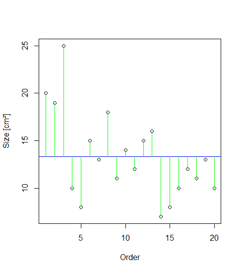

Varianz ist ein Mass für die Streuung von Werten um ihren Mittelwert. Mathematisch wird die Varianz wie folgt berechnet :
Abweichungsquadrate sind dabei die quadrierten Werte der grünen (bzw. schwarzen und roten) vertikalen Linien in der obigen Abbildung. Die Distanzen werden quadriert, so dass negative Abweichungen gleichermassen zählen. Würde man nur die unquadrierten Werte aufsummieren, wäre das Ergebnis immer 0, da die horizontale Linie (der Mittelwert) ja genaus gelegt wurde, dass die positiven und negativen Abweichungen betragsmässig gleich sind. Ein zentraler Punkt der Varianzanalyse ist, dass sich die Gesamtsumme der Abweichungsquadrate (Total sum of squares) als die Summe zweier Teile (SSE und SSA) darstellen lässt:
Schauen wir das zunächst beim Blumen-Datensatz an. Dazu müssen wir die Daten, die wir bislang im sogenannten wide format hatten (eine Spalte für Blütengrösse A und eine zweite für Blütengrösse B) im long format bereitstellen (eine Spalte für die Sorte und eine für die Blütengrösse). Generell ist das long format empfehlenswert, da viel universeller und von den meisten statistischen Verfahren verlangt.
head(blume.long) cultivar size
1 a 20
2 a 19
3 a 25
4 a 10
[…]
11 b 8
12 b 12
13 b 9Schauen wir uns zunächst noch einmal das Ergebnis als “normalen” t-Test an:
t.test(size~cultivar, blume.long, var.equal=T) Two Sample t-test
data: size by cultivar
t = 2.0797, df = 18, p-value = 0.05212
alternative hypothesis: true difference in means between group a and group b is not equal to 0
95 percent confidence interval:
-0.03981237 7.83981237
sample estimates:
mean in group a mean in group b
15.3 11.4Nun nehmen wir dieselben Daten und analysieren sie mit einer Varianzanalyse. Der Befehl dazu ist aov (was für analysis of variance steht). Man kann sich die Ergebnisse der ANOVA mit summary und summary.lm anzeigen lassen und bekommt jeweils unterschiedliche Informationen (die wir beide benötigen):
summary(aov(size~cultivar)) Df Sum Sq Mean Sq F value Pr(>F)
cultivar 1 76.0 76.05 4.325 0.0521 .
Residuals 18 316.5 17.58 summary.lm(aov(size~cultivar))[…]
Coefficients:
Estimate Std. Error t value Pr(>|t|)
(Intercept) 15.300 1.326 11.54 9.47e-10 ***
cultivarb -3.900 1.875 -2.08 0.0521 . Beim ersten Output (summary) sehen wir eine typische “ANOVA-Tabelle” wie man sie als Ergebnis linearer Modelle erhält. Die Bedeutung der Abkürzungen ist wie folgt:
- Df = Degrees of freedom (Freiheitsgrade)
- Sum Sq = Sum of squares (Summe der Abweichungsquadrate)
- Mean Sq = Sum of squares / degrees of freedom (Quotient der beiden Werte)
- F value = Mean Sq (Treatment) / Mean Sq (Residuals) (Quotient derbeiden mittleren Abweichungsquadrate)
- Pr(>F) = Probability to obtaine a more extreme F value under the null hypothesis (p-Wert)
Der F-Wert ist das Verhältinis der durch die Variable und die Residuen erklärten Varianzen (Mean squares), also \(\frac{76.05}{17.58} = 4.33\). Der F-Wert (4.33) entsprichtdem quadrierte t-Wert (–2.08) aus der unteren Tabelle. Der p-Wert (0.052) in der obigen Tabelle ist also genau der gleiche wie im t-Test, was die Äquivalenz von ANOVA und t-Test zeigt. Dieser p-Wert steht für die Nullhypothese, dass sich die beiden Sorten nicht in ihrer Blütengrösse unterscheiden.
Derselbe p-Wert taucht im summary.lm-Output unten in der zweiten Zeile auf. Aber für was steht der extrem kleine p-Wert in der ersten Zeile des summary.lm-Outputs (9.47 x 10–10)? In der Zeile steht (Intercept), also Achsenabschnitt. Hier ist der vorhergesagte Mittelwert für die erste Sorte (Cultivar a) gemeint. Die Nullhypothese zu dieser Zeile ist, dass die Blütengrösse dieser Sorte = 0 ist. Da Blütengrössen immer positive Werte haben (nie negativ und für eine existierende Blüte auch nie 0), ist das keine sinnvolle/relevante Nullhypothese. In den allermeisten Fällen bezieht sich der p-Wert in der ersten Zeile eines summary.lm-Outputs auf eine unsinnige/irrelevante Nullhypothese und wir können/müssen ihn ignorieren. Eine weitere wichtige Information liefert uns die zweite Tabelle aber noch: die Effektgrösse und -richtung. Dazu müssen wir in die Spalte Estimates schauen, welche die sogenannten Parameterschätzungen enthält. Im Falle einer ANOVA enthält die (Intercept)-Zeile den geschätzten Mittelwert für die alphabetisch erste Kategorie (bei uns also Cultivar a), währen das Estimate in der Zeile cultivarb für den Unterschied im Mittelwert von Cultivar b vs. Cultivar a steht, hier steht also die biologisch relevante Information, sprich: die Blüten von Cultivar b sind im Mittel 3.9 cm2 kleiner als jene von Cultivar a. Allerdings sind wir uns dieser Aussage nicht besonders sicher, da sie statistisch nur marginal signifikant ist (\(p = 0.052\)).
Wenn wir eine “echte” ANOVA mit drei oder mehr Kategorien durchführen, die also nicht mehr mit dem t-Test analysiert werden kann, sieht der Output vergleichbar aus, nur hat sich die Zahl der Freiheitsgrade in der ersten Zeile erhöht (immer Zahl der Kategorien – 1, bei 3 Kategorien also 2).
summary(aov(size~cultivar)) Df Sum Sq Mean Sq F value Pr(>F)
cultivar 2 736.1 368.0 18.8 7.68e-06 ***
Residuals 27 528.6 19.6 In diesem Fall gibt es also höchstsignifikante Unterschiede in der Blütengrösse zwischen den drei Sorten. Wir könnten das Ergebnis kurz und prägnant wie folgt wiedergeben:

Abb. 1. Boxplots der Blütengrössen der drei verglichenen Cultivare a, b und c (jeweils n = 10).
Zwei Anmerkungen: (1) Bei drei und mehr Kategorien kann man im Text nicht mehr effizient schreiben, welche Sorte sich wie von welcher anderen unterscheidet, deshalb bietet sich hier eher eine Visualisierung an (sofern die ANOVA signifikant ist). (2) Wenn man den F-Wert angeben möchte, so muss man im Subskript nachgestellt die Freiheitsgrade im Zähler (2) und im Nenner (27) angeben, die man der ANOVA-Tabelle entnehmen kann.
Post-hoc-Test (Tukey)
In der vorhergehenden ANOVA wissen wir nun, dass es insgesamt ein signifikantes Muster gibt, dass also nicht alle drei Sorten der gleichen Grundgesamtheit angehören. Was wir nicht wissen, ist, welche Sorte sich von welcher anderen unterscheidet, und ggf. wie stark. Wenn die ANOVA insgesamt signifikant ist, muss das längst nicht heissen, dass jede Sorte sich von jeder anderen unterscheidet. Nun könnte man auf die Idee kommen, einfach für jedes Sortenpaar einen t-Test durchzuführen. Das Problem ist, dass man dann u. U. ziemlich viele Tests mit denselben Daten macht, und da summieren sich die Typ I-Fehlerraten schnell auf, sprich: bei vielen Tests werden rein zufällig manche ein signifikantes Ergebnis ergeben (mit α = 0.05 wird 5 % Irrtum zugelassen, d. h. im Durchschnitt liefert jeder zwanzigste Test ein falsch-positives Ergebnis). Um diesem Problem Rechnung zu tragen, gibt es sogenannte posthoc-Tests, die nach einer signifikanten ANOVA angewandt werden. Wenn die ANOVA nicht signifkant war, darf dagegen kein posthoc-Test angewandt werden! Der gängigste posthoc-Test ist jener von Tukey und findet sich u. a. im agricolae-Paket:
library(agricolae)
aov.1 <- aov(size~cultivar, data=blume2)[…]
Comparison between treatments means
difference pvalue signif. LCL UCL
a - b 3.9 0.1388 -1.006213 8.806213
a - c -8.0 0.0011 ** -12.906213 -3.093787
b - c -11.9 0.0000 *** -16.806213 -6.993787Das Ergebnis sagt uns, dass sich c von a und c von b, nicht aber b von a signifikant unterscheiden. Bei nur drei Kategorien kann man das noch so formulieren, bei vier, fünf oder mehr wird es aber schnell langatmig und komplex. Das lässt sich mit sogenannten homogenen Gruppen lösen. Hier versieht man die Kategorien mit gleichen Buchstaben, die sich nicht signifikant voneinander unterscheiden, ggf. kann dann eine Kategorie auch mehrere Buchstaben tragen. In unserem Fall wäre die Lösung also:
- Cultivar a: A
- Cultivar b: A
- Cultivar c: B
Diese Buchstaben kann man in die Ergebnisabbildung plotten oder als Superskript in einer Ergebnistabelle der Mittelwerte. Die folgende Abbildung zeigt ein Beispiel. Hier unterscheiden sich nur High und Low signifikant voneinander, da dies das einzige Paar ist, das keine gemeinsamen Buchstaben hat:

Hier ist noch gezeigt, wie man die Beschriftung in die Boxplots bekommt:
aov.2 <- aov(Sepal.Width ~ Species, data=iris)
HSD.test(aov.2, "Species", console=TRUE)Treatments with the same letter are not significantly different.
Sepal.Width groups
setosa 3.428 a
virginica 2.974 b
versicolor 2.770 cDie Buchstaben aus dem Output muss man dann manuell zur jeweiligen Art plotten (Reihenfolge der Arten beachten!)
boxplot(Sepal.Width ~ Species, ylim=c(2,5), data=iris)
text(1, 4.8, "a")
text(2, 4.8, "c")
text(3, 4.8, "b")
Voraussetzung statistischer Verfahren
In Statistik 1 wurde kurz erwähnt, dass jeder statistische Test auf bestimmten Annahmen bezüglich der Werteverteilung in der Grundgesamtheit beruht. Beim klassischen t-Test nach Student sind das die Normalverteilung und die Varianzhomogenität.
Parametrische vs. nicht-parametrische Verfahren
Verfahren, die auf dem folgenden gängigen Set von Voraussetzungen beruhen, werden als parametrische Verfahren bezeichnet. Es sind dies zugleich die “linearen Modelle” (doch zu diesem Begriff später mehr):
Dem gegenüber gestellt werden so-genannte “nicht-parametrische” Verfahren. Der Begriff ist allerdings sehr irreführend, da nicht-parametrische Verfahren nicht etwa keine Voraussetzungen haben, sondern meist nur geringfügig schwächere als parametrische Verfahren. Die Voraussetzungen für die Anwendung gängiger nicht-parametrischer Verfahren sind:
Diese beiden Listen, weisen auf zwei weitverbreitete Irrtümer in der Statistik hin, die in älteren Statistikbüchern regelmässig falsch dargestellt wurden und die auch heute noch in Statistikursen an Hochschulen oft falsch gelehrt werden:
In der Folge ist zu beobachten, dass vielfach vorschnell und unnötig auf “nicht-parametrische” Verfahren ausgewichen wird. Dagegen sprechen viele Gründe dafür, in fast allen Fällen mit parametrischen Verfahren zu arbeiten:
Wie testet man die Voraussetzungen? (klassischer Weg)
Der “klassische” (aber nicht zielführende!!!) Rat in vielen Statistikbüchern/-kursen ist die Anwendung statistischer Tests für Normalität und Varianzhomognität. Für die Normalität (beachten, dass die Residuen, nicht dir Rohdaten getestet werden müssen, also im Fall einer ANOVA die Werte jeder Kategorie für sich). Es gibt u.a. den Kolmogorov-Smirnov-Test (mit Lillefors-Korrektur) und den Sharpiro-Wilks-Test:
shapiro.test(blume$b)Für das Testen der Varianzhomogenität gibt es u.a. den F-Test zur Varianzhomogenität und den Levene-Test (im Paket car):
var.test(blume$a, blume$b)
library(car)
leveneTest(blume$a, blume$b,center = mean)Wenn die p-Werte dieser Tests < 0.05 sind, dann liegt eine statistisch signifikante Abweichung von der jeweiligen Voraussetzung vor. Die klassische Konsequenz war, dann auf ein nicht-parametrisches Verfahren auszuweichen. Studierende und viele PraktikerInnen lieben diese scheinbar simple Schwarz-weiss-Sicht, die ein klares Prozedere vorzugeben scheint. Leider bringen diese Tests für die Entscheidung zwischen parametrischen und nicht-parametrischen Verfahren NICHTS. Die Gründe sind eigentlich einfach:
- Die genannten Tests testen allesamt die Wahrscheinlichkeit der Abweichung, nicht den Grad der Abweichung (wobei Letzteres der relevante Punkt ist).
- Damit werden einerseits bei kleinen Stichproben auch problematische Abweichungen nicht erkannt, bei grossen Stichproben harmlose Abweichungen dagegen “moniert” (man sollte sich bewusst sein, dass Variablen in der realen Welt niemals perfekt normalverteilt oder perfekt varianzhomogen sind)
Deshalb wird in modernen Lehrbüchern ausdrücklich davon abgeraten, die genannten Tests für diesen Zweck zu verwenden (z. B. Quinn & Keough 2002).
Wie testet man die Voraussetzungen? (empfohlener Weg)
Da die “klassischen” numerischen Tests nichts helfen, bleibt nur ein Weg, selbst wenn er zunächst unbefriedigend und subjektiv erscheinen mag. Moderne statistische Lehrbücher empfehlen heute, Normalverteilung der Residuen und Varianzhomogenität visuell zu prüfen und nur bei groben Verletzungen über Gegenmassnahmen nachzudenken.
Im Fall von t-Tests bzw. ANOVAs ist die einfachste Möglichkeit, nach Faktorlevels gruppierte Boxplots zu betrachten. Alternativ gingen auch Histogramme, allerdings sind diese nur bei grossen n aussagekräftig:
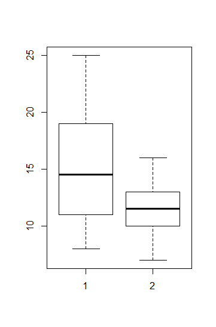
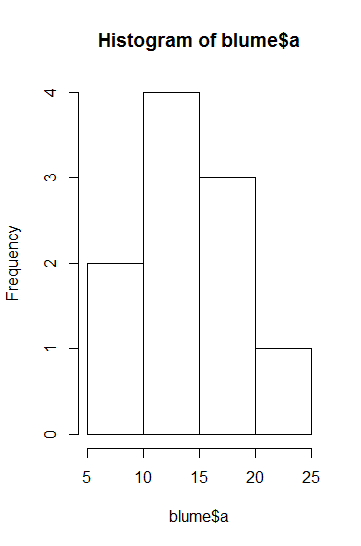

Für die Beurteilung der Varianzhomogenität betrachtet man am besten die Höhe der Boxen im Boxplot. Wenn sie ähnlich hoch sind, ist alles OK, wenn sie sehr stark abweichen, hat man evtl. ein Problem. Sehr stark meint aber, siehe oben, wirklich sehr stark, d. h. wenn die Box in einer Kategorie mehr als 4-mal so hoch ist wie in einer anderen (bei gleichen/ähnlichen Replikatzahen), und ab mehr als doppelt so hoch bei erheblich verschiedenen Replikatzahlen. Im vorliegenden Fall ist die Varianz in Gruppe 1 etwa 2.5-mal so hoch wie in Gruppe 2, da die Zahl der Replikate aber identisch war, wäre das noch OK.
Zur Beurteilung der Normalverteilung bzw. des entscheidenden Aspekts der Normalverteilung, der Symmetrie, sind ebenfalls die Boxplots aufschlussreich. Eine starke Verletzung liegt vor, wenn der Median weit ausserhalb der Mitte der Box liegt oder wenn der obere “whisker” viel länger als der untere ist.
Ausserdem gibt es noch das Central Limit Theorem (CLT) in der Statistik. Dieses Theorem besagt, dass wenn eine betrachtete Variable selbst schon ein Mittelwert ist, sie zwingend einer Normalverteilung folgt. In diesem Fall ist also gar kein Test nötig/sinnvoll. Wenn man sich auf das CLT berufen will, kann man z. B. Quinn & Keough (2002) zitieren.
Was tun, wenn die Voraussetzungen verletzt sind? (nicht-parametrische Verfahren)
Bei Verletzung der Voraussetzungen, kann man auf nicht-parametrische Verfahren ausweichen, was OK ist, wenn man sich völlig klar darüber ist, welche Voraussetzungen diese ihrerseits haben:
Das nicht-parametrische Äquivalent zum t-Test ist der Wilcoxon-Rangsummen-Test. Er funktioniert, indem Werte in Ränge transformiert und summiert werden (W-statistic). Nachteile sind, dass er sehr konservativ ist (d. h. tendenziell zu hohe p-Werte schätzt) und zudem keine exakten p-Werte berechnen kann, wenn “Bindungen” (ties) vorliegen (d. h. mehrere Beobachtungen identische Werte aufweisen). Ausserdem sei noch einmal betont, dass der Wilcoxon-Test zwar keine Annahme über die Verteilung der Werte pro Gruppe macht, jedoch voraussetzt, dass diese in jeder Gruppe gleich ist.
wilcox.test(blume$a, blume$b)Ferner gibt es Randomisierungs-t-Tests. Diese haben den Vorteil, dass keine Annahme über die Verteilung getroffen werden muss (die Verteilung wird aus den Daten generiert). Zugleich müssen die Beobachtungen noch nicht einmal unabhängig sein. Allerdings testet man hier strenggenommen auch nicht auf Unterschiede in den Grundgesamtheiten, sondern ermittelt die Wahrscheinlichkeit, die beobachteten Unterschiede zufällig erzielt zu haben. Wer mehr über Randomisierungs-Tests wissen will, findet in Logan (2010: 148–150) weitergehende Infos.
Im Fall der ANOVA gibt es zwei Situationen:
Wir haben starke Abweichungen von der Normalverteilung der Residuen, aber ähnliche Varianzen. Dann kann der Kruskal-Wallis-Test zum Einsatz kommen (ebenfalls ein Rangsummen-Test). Der zugehörige posthoc-Test ist der Dunn-Test mit Benjamin-Hochberg-Korrektur der p-Werte (wegen multiplem Testen):
kruskal.test(data = blume2, size~cultivar) library(FSA) dunnTest(data = blume2, size~cultivar, method = "bh")Wenn dagegen die Varianzen sehr heterogen sind, die Residuen aber relativ normal/symmetrisch, wie in der folgenden Abbildung, kann der Welch-Test eingesetzt werden:
oneway.test(data=blume2, size~cultivar, var.equal=F)Was tun, wenn die Voraussetzungen verletzt sind? (Transformationen)
Statt auf nicht-parametrische Verfahren auszuweichen, kann man auch Transformationen anwenden. Da es um die Verteilung der Residuen geht, muss primär die abhängige Variable für Transformationen in Betracht gezogen werden, manchmal hilft aber auch die Transformation einer unabhängigen Variablen (weitergehende Infos siehe Fox & Weisberg 2019: 161–169).
Wenn man über die Anwendung von Transformationen nachdenkt, sind zwei Aspekte relevant: (1) Entgegen manchen Behauptungen sind untransformierte Daten (linear Skala) nicht per se natürlicher/richtiger. Auch die lineare Skala ist eine Konvention. Viele Naturgesetze (z. B. unsere Sinneswahrnehmung) funktionieren dagegen auf einer Logarithmusskala. (2) Wenn man die abhängige Variable transformiert, muss man sich aber klar darüber sein, dass man dann strenggenommen Hypothesen über die transformierten Daten, nicht über die ursprünglichen Werte testet. Achtung: Wenn man die Analysen mit tranformierten Daten durchführt, darf man für die Ergebnisdarstellung die Rücktransformation mittels der jeweiligen Umkehrfunktion nicht vergessen!
Gängige Transformation für die abhängige Variable sind die folgenden:
Logarithmus-Transformation:
- Gut bei rechtsschiefen Daten/wenn die Varianz mit dem Mittelwert zunimmt.
- Die “natürlichste” Transformation.
- Natürlicher Logarithmus (
log) oder Zehnerlogarithmus (log10) möglich. - Werte müssen > 0 sein.
log (x + Konstante)-Transformation:
- Findet man häufig in der Literatur, wenn abhängige Variablen transformiert werden sollen, die auch Nullwerte enthalten
- Es werden unterschiedliche Konstanten (x) addiert, mal 1, mal 0.01. Es ist aber völlig willkürlich, ob man 1000000 oder 0.00000001 oder 3.24567 addiert, hat aber starken Einfluss auf die Ergebnisse
- Auch lassen sich die Ergebnisse nach so einer komplexen Transformation schlecht interpretieren (da man dann ja eine Hypothese über die transformierten Daten testet, s. o.)
- In Übereinstimmung mit Wilson (2007) rate ich daher dringend von derlei Transformationen ab!
Wurzeltransformation:
- Hat einen ähnlichen Effekt wie die Logarithmus-Transformation, lässt sich im Gegensatz zu dieser auch beim Vorliegen von Nullwerten anwenden (Werte müssen nur positiv sein).
- Die “Stärke” der Transformation kann man durch die Art der Wurzel kontinuierlich einstellen: Quadratwurzel, Kubikwurzel, 4. Wurzel,…
“arcsine”-Transformation:
asin(sqrt(x))\*180/pi
- Wurde traditionell für Prozentwerte (Proportionen) und andere abhängige Variablen empfohlen, die zwischen 0 und 1 bzw. 0 und 100% begrenzt sind (z. B. Quinn & Keough 2002).
- Nach neueren Untersuchungen (Warton & Hui 2011) wird eher davon abgeraten.
Rangtransformation:
- Im Prinzip das, was “nicht-parametrische” Verfahren machen.
- Grösster Informationsverlust von allen genannten Verfahren (noch grösser wäre der Informationsverlust nur bei Überführung der metrischen abhängigen Variablen in Kategorien oder gar in eine Binärvariable).
Die folgenden Abbildungen visualisieren exemplarisch die Effekte unterschiedlicher Transformationen auf die Werteverteilung (ganz links sind jeweils die untransformierten Daten, die Transformation rechts hat jeweils eine deutlich bessere Annäherung an die Normalverteilung erzielt).
 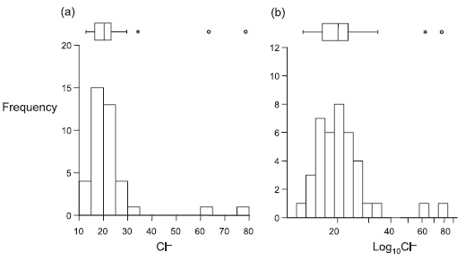 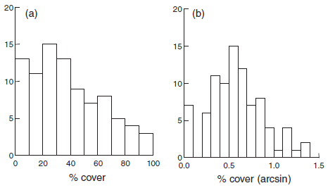
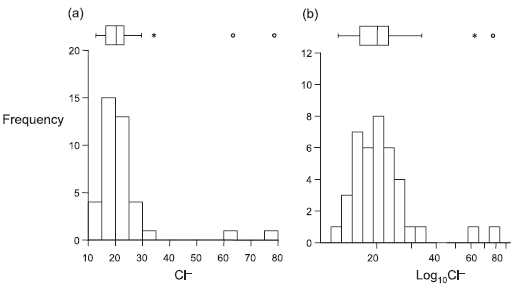 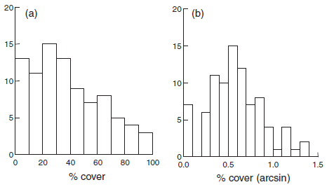
(aus Quinn & Keough 2002)
Meist muss man nur die abhängige Variable transformieren. Es gibt aber Spezialfälle, wo man erst nach Transformation der abhängigen und der unabhängigen Variable eine adäquate Residuenverteilung erzielt. Dies ist insbesondere dann der Fall, wenn wir eine in Wirklichkeit nicht-lineare Beziehung mit einem linearen Modell abbilden. Wenn etwa im Falle einer einfachen linearen Regression (s. u.) in Wirklichkeit ein Potenzgesetz (y = a xb) vorliegt, erzielt man näherungsweise Varianzhomogenität und Normalverteilung der Residuen nur, wenn man a und b logarithmustransformiert.
Mehrfaktorielle ANOVA
Bislang haben wir uns eine ANOVA mit nur einem Prädiktor, d. h. einer kategorialen Variablen mit zwei bis vielen Ausprägungen, angeschaut. Das Prinzip lässt sich aber auch auf zwei und mehr kategoriale Prädiktoren ausweiten. Man spricht dann von einer mehrfaktoriellen ANOVA. Im Optimalfall sollten alle Kombinationen Faktorlevels aller Prädiktorvariablen auftreten (dann spricht man von einem vollfaktoriellen Design), am besten sogar in gleicher/ähnlicher Häufigkeit.
Betrachten wir exemplarisch die Situation mit zwei Prädiktoren (zweifaktorielle Varianzanalyse, two-way ANOVA). Hierzu haben wir in unserem Blumenbeispiel neben den drei Sorten noch ein weiteres “Treatment” hinzugefügt, nämlich, ob die Pflanzen im Gewächshaus (house = yes) oder im Freiland (house = no) aufgezogen wurden. Der Boxplot in der explorativen Datenanalyse sieht wie folgt aus:
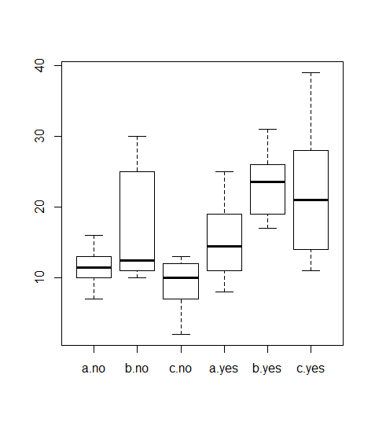
Wir haben nun zwei Möglichkeiten, die zweifaktorielle Varianzanalyse durchzuführen, mit oder ohne Berücksichtigung von Interaktionen:
summary(aov(size~cultivar+house)) Df Sum Sq Mean Sq F value Pr(>F)
cultivar 2 417.1 208.5 5.005 0.01 *
house 1 992.3 992.3 23.815 9.19e-06 ***
Residuals 56 2333.2 41.7 summary(aov(size~cultivar*house)) Df Sum Sq Mean Sq F value Pr(>F)
cultivar 2 417.1 208.5 5.364 0.0075 **
house 1 992.3 992.3 25.520 5.33e-06 ***
cultivar:house 2 233.6 116.8 3.004 0.0579 .
Residuals 54 2099.6 38.9 Ohne Interaktion (oben) verknüpfen wir die beiden Prädiktoren einfach mit “+”; wenn wir die Interaktion auch analysieren wollen (unten), dann verwenden wir “*” zur Verknüpfung. Ein Interaktion läge dann vor, wenn sich die Auswirkung von Gewächshaus vs. Freiland zwischen den Sorten unterschiede, etwa in einem Fall positiv, im anderen neutral oder negativ. Wir sehen, dass die untere ANOVA mit dem Interaktionsterm im Output eine dritte Zeile cultivar:house enhält, welcher die Signifikanz der Interaktion angibt (in unserem Fall also marginal signifikant).
Liegt eine signifikante Interaktion vor, dann nimmt man zur Ergebnisdarstellung am besten eine Grafik, einen sogenannten Interaktionsplot, da sich die Interaktion schon bei zweifaktoriellen ANOVAs schwer in Worte fassen lässt und noch schwerer bei dreifaktoriellen ANOVAs mit potenziell einer Dreifachinteraktion und drei Zweifachinteraktionen:
interaction.plot(cultivar,house,size)
Die Interaktion war nicht signifikant, was sich darin zeigt, dass die Linienzüge für yes und no einigermassen parallel sind, d. h. im Gewächshaus alle drei Kultivare grösser waren. Allerdings haben sich die drei Kultivare nicht völlig konsistent verhalten: der positive Einfluss von Gewächshaus war bei Sorte c viel grösser als bei den anderen beiden (was zu einem p-Wert der Interaktion nahe an der Signifikanzschwelle geführt hat).
# Visualisierung 2-fach-Interaktion etwas elaborierter
# mit ggplot
library(sjPlot)
library(ggplot2)
theme_set(theme_classic())
aov <- aov(size ~ cultivar * house, data = blume3)
plot_model(aov, type = "pred", terms = c("cultivar", "house") )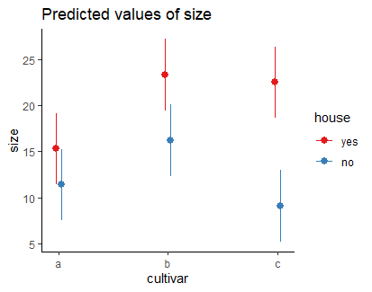
Mit sjPlot kann man auch gut 3-fach-Interaktionen visualisieren, wie das folgende Beispiel zur Auswirkung von Managment und Hirschbeweidung (fenced = keine Hirsche) über zwei Versuchsjahre auf den Pflanzenartenreichtum zeigt:

aov.deer <- aov(Species.richness ~ Year * Treatment * Plot.type, data = Riesch)
plot_model(aov.deer, type = "pred", terms = c("Year", "Treatment", "Plot.type"))Korrelationen
Pearson-Korrelationen analysieren den Zusammenhang zwischen zwei metrischen Variablen** und beantworten dabei die folgenden Fragen:
- Gibt es einen linearen Zusammenhang?
- In welche Richtung läuft er?
- Wie stark ist er?
Wichtig dabei ist, dass Korrelationen keine Kausalität voraussetzen oder annehmen. Es gibt also keine abhängige und unabhängige Variable, keine Unterscheidung in Prädiktor- und Antwortvariable. Logischerweise liefern Korrelationen dann auch identische Ergebnisse, wenn x- und y-Achse vertauscht werden.
Die folgenden fünf Abbildungen zeigen verschiedene Situationen. Bei (a) liegt eine positive Korrelation vor, bei (b) eine negative und bei (c)–(e) keine Korrelation. Bei (e) erkennt man zwar visuell eine Beziehung (ein “Peak” in der Mittel, also eine unimodale Beziehung), aber das ist eben kein linearer Zusammenhang.

Bei der Pearson-Korrelation betrachtet man die beiden Parameter Kovarianz (reicht von −∞ bis +∞) und die Korrelation, welche die Covarianz auf den Bereich von –1 bis +1 standardisiert. Pearsons Korrelationskoeffizient r ist der Schätzer für die Korrelation basierend auf der Stichprobe:
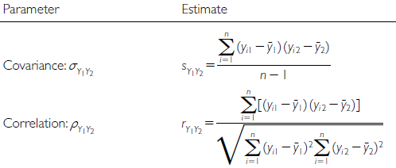
Die implizite Nullhypothese (H0) ist nun ρ = 0. Die Teststatistik ist das uns schon bekannte t mit \(t = \ \frac{r}{s_{r}}\) , wobei sr für den Standardfehler von r steht und bei n – 2 Freiheitsgraden gestet wird.
Die Pearson-Korrelation ist die “parametrische” Variante der Korrelationen. Ihre Anwendung hat zwei Voraussetzungen (in Klammern ist angegeben, wie man ihr Vorliegen visuell überprüfen kann):
- Linearität (Überprüfung mit einem xy-Scatterplot)
- Bivariate Normalverteilung (Überprüfung mit Boxplots beider Variablen)
Wenn diese Voraussetzungen ungenügend erfüllt sind, kann man auf nicht-parametrische Äquivalente ausweichen. Diese testen auf monotone, nicht auf lineare Beziehungen, liefern allerdings keine exakten Ergebnisse bei Bindungen (d.h. wenn der gleiche Wert mehrfach vorkommt):
- Für 7 ≤ n ≤ 30: Spearman-Rang-Korrrelation (rs) (im Prinzip Pearsons r für rangtransformierte Daten)
- Für n > 30: Kendall’s tao (τ)
Hier noch der R Code für alle drei Möglichkeiten:
cor.test(df$Species.richness, df$N.deposition, method = "pearson")
cor.test(df$Species.richness, df$N.deposition, method = "spearman")
cor.test(df$Species.richness, df$N.deposition, method = "kendall")Einfache lineare Regressionen
Idee
Einfache lineare Regressionen sind konzeptionell und mathematisch ähnlich zu Pearson-Korrelationen. Oft werden beide Verfahren daher fälsch auch begrifflich durcheinandergeworfen. Der entscheidende Unterschied ist, dass wir für eine Regression eine theoretisch vermutete Kausalität haben müssen. Damit haben wir, anders als bei einer Korrelation, eine fundamentalte Unterscheidung in:
X: unabhängige Variable (independent variable), Prädiktorvariable (predictor)
Y: abhängige Variable (dependent variable), Antwortvariable (response)
Bei Visualisierungen ist zu beachten, dass die unabhängige Variable immer auf der x-Achse dargestellt wird, die abhängige dagegen auf der nach oben gerichteten y-Achse.
Mathematisch wird eine lineare Regression analysiert, indem die bestangepasste Gerade durch die Punktwolke des xy-Scatterplots gelegt wird. Dabei sieht das lineare Modell folgendermassen aus:
- Geradengleichung: \(y = b_0 + b_1 x\)
- Statistisches Modell: \(y_i = \beta_0 + \beta_1 x_i + \epsilon\), wobei \(\epsilon_i\) das Residuum des i-ten Datenpunktes ist, d. h. seine vertikale Abweichung vom vorhergesagten Wert
Mit einer einfachen linearen Regression testet man die folgenden beiden Nullhypothesen:
- \(H_0\): \(\beta_0 = 0\) (Achsenabschnitt [intercept] der Grundgesamtheit ist Null) (diese erste Nullhypothese ist, ähnlich wie bei Varianzanalysen, in den meisten Fällen wissenschaftlich nicht relevant)
- \(H_0\): \(\beta_0 = 1\) (Steigung [slope] der Grundgesamtheit ist Null)
Die folgende Abbildung veranschaulicht die verschiedenen Möglichkeiten:
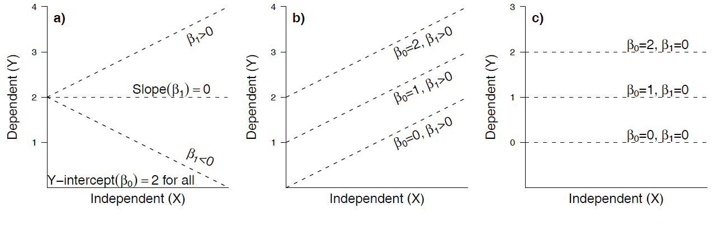
Statistische Umsetzung
Es mag vielleicht zunächst überraschen, aber ähnlich wie beim Vergleich von Mittelwerten zwischen kategorischen Ausprägungen kategorischer Variablen, liegt auch der linearen Regression eine Varianzanalyse zugrunde:


Wiederum ist die Teststatistik ein \(F\)-ratio, nämlich \(F = \frac{\text{MS}_\text{Regressionen}}{\text{MS}_\text{Residual}}\), wobei MS für die mittleren Quadratsummen steht, also die Quadratsummen (SS) geteilt durch die Freiheitsgrade (df). Wie oben unter der Varianzanalyse schon erwähnt, folgt \(F\) einer \(t^2\)-Verteilung.
Implementierung in R
Das Kommando zum Berechnen einfacher linearer Regressionen lautet lm. Wie bei einem Mittelwertvergleich mittels Varianzanalyse gibt es dann zwei verschiedene Ansichten des Ergebnis-Outputs, die jeweils verschiedene Teilaspekte zeigen (Hier am Beispiel der Beziehung von Pflanzenartenreichtum zur Stickstoffdeposition):
lm <- lm(Species.richness~N.deposition, data = df)
anova(lm) # ANOVA-Tabelle, 1. Möglichkeit
summary.aov(lm) # ANOVA-Tabelle, 2. MöglichkeitResponse: Species.richness
Df Sum Sq Mean Sq F value Pr(>F)
N.deposition 1 233.91 233.908 28.028 0.0001453 ***
Residuals 13 108.49 8.346 Die anova-Ansicht liefert uns die oben besprochene ANOVA-Tabelle, einschliesslich der Signifikanz der Steigung (hier \(p = 0.0001\)). Weitere erforderliche Aspekte des Ergebnisses sehen wir in der summary-Ansicht:
summary(lm) # RegressionskoeffizientenCoefficients:
Estimate Std. Error t value Pr(>|t|)
(Intercept) 25.60502 1.26440 20.251 3.25e-11 ***
N.deposition -0.26323 0.04972 -5.294 0.000145 ***
[…]
Residual standard error: 2.889 on 13 degrees of freedom
Multiple R-squared: 0.6831, Adjusted R-squared: 0.6588
F-statistic: 28.03 on 1 and 13 DF, p-value: 0.0001453Wie wir sehen, tauchen wiederum der F-Wert (28.03) und sogar zweimal der p-Wert der Steigung (0.0001) auf, daneben auch der i. d. R. bedeutungslose p-Wert des Achsenabschnitts (intercept) (3.25 x 10-11).
Werfen wir noch einmal einen Blick auf den Output von R:
Coefficients:
Estimate Std. Error t value Pr(>|t|)
(Intercept) 25.60502 1.26440 20.251 3.25e-11 ***
N.deposition -0.26323 0.04972 -5.294 0.000145 ***
[…]
Residual standard error: 2.889 on 13 degrees of freedom
Multiple R-squared: 0.6831, Adjusted R-squared: 0.6588
F-statistic: 28.03 on 1 and 13 DF, p-value: 0.0001453Wir benötigen
- Name des Verfahrens (Methode): Einfache lineare Regression (mit der Methode der kleinsten Quadrate).
- Signifikanz (Verlässlichkeit des Ergebnisses): p-Wert der Steigung, nicht der p-Wert des Achsenabschnittes (wird nach üblicher Konvention auf drei Nachkommastellen gerundet oder, wenn unter 0.001, dann als p < 0.001 angegeben).
- Effektgrösse und -richtung (unser eigentliches Ergebnis!): Im Falle einer linearen Regression ist das die Funktionsgleichung, die sich aus den Schätzungen der Koeffizienten ergibt.
- Erklärte Varianz (Relevanz des Ergebnisses): Wie viel der Gesamtvariabilität der Daten wird durch das Modell erklärt? Ob \(R^2\) oder \(R_\text{adj.}^2\) angegeben werden sollte, wird unterschiedlich gesehen, jedenfalls sollte man explizit sagen, was gemeint ist. \(R^2\) ist übrigens der quadrierte Wert von Pearsons Korrelationskoeffizienten r.
- ggf. Wert der Teststatistik mit den Freiheitsgraden (“Zwischenergebnisse”): \(F_{1,2} = 11.34\)
Ein adäquater Ergebnistext könnte daher wie folgt lauten:
Bei einem signifkanten Ergebnis bietet sich auch noch eine Visualisierung mittels Scatterplot an, in den die Regressionsgerade geplottet ist:
plot(b~a,xlim=c(0,25),ylim=c(0,20))
abline(lm(b~a))
Voraussetzungen
Einfache lineare Regressionen basieren auf drei Vorausetzungen:
- Linearität
- Normalverteilung (der Residuen!)
- Varianzhomogenität
Für das meistverwendete Verfahren der kleinsten Abweichungsgquadrate (wie bislang besprochen; ordinary least squares = OLS), auch als Modell I-Regressionen bezeichnet, muss zudem gelten:
Feste x-Werte, d. h.
- x-Werte vom Experimentator gesetzt ODER
- Fehler in den x-Werten viel kleiner als in den y-Werten
Sowie auch für folgende Fälle:
- Hypothesentest \(H_0: \beta_1 = 0\) im Fokus, nicht der exakte Wert von β~1
- Für prädiktive Modelle
- Wenn keine bivariate Normalverteilung vorliegt
Alternativen zur Methode der kleinsten Quadrate (OLS)
Wenn keine der oben unter Punkt 4 genannten Voraussetzungen erfüllt ist, dann sollte eine sogenannte Modell-II-Regression (Nicht-OLS-Regression) durchgeführt werden. Hier stehen als Möglichkeiten die Major axis regression, die Ranged major axis regression und die Reduced major axis regression zur Verfügung. Details finden sich in Logan (2010: 173–175), woraus aus die folgende Visualisierung stammt:

In R stehen solche Methoden u. a. im Paket lmodel2 zur Verfügung:
library(lmodel2)
lmodel2(b~a)Regression results
Method Intercept Slope Angle (degrees) P-perm (1-tailed)
1 OLS 5.019254 0.4170422 22.63820 NA
2 MA 4.288499 0.4648040 24.92919 NA
3 SMA 3.067471 0.5446097 28.57314 NAWie man sieht, unterscheiden sich die beiden Modell-II-Ergebnisse deutlich von Modell I (OLS).
Lineare Modelle allgemein
Was macht ein lineares Modell aus?
Die meisten statistischen Verfahren, die wir bis zu diesem Punkt angeschaut haben, gehören zu den linearen Modellen. Dieser Begriff wird häufig weitgehend synonym mit “parametrischen Verfahren” verwendet, ist aber treffender. Von den bisherigen Verfahren gehören die folgenden zu den linearen Modellen:
- Pearson-Korrelation
- t-Test
- Varianzanalyse
- Einfache lineare Regression
Was macht nun lineare Modelle aus:
- Voraussetzungen: Normalverteilung der Residuen und Varianzhomogenität
- In R kann man sie (mit Ausnahme der Pearson-Korrelation) mit dem Befehl lm abbilden (ja, auch die Varianzanalyse!)
- Varianzanalysen und lineare Regressionen nutzen beide ANOVA-Tabellen mit F-ratios als Testverfahren
- Lineare Modelle lassen sich als Linearkombination der Prädiktoren schreiben, d. h.:
- Prädiktoren werden nicht als Multiplikator, Divisor oder Exponent anderer Prädiktoren verwendet
- die Beziehung muss aber nicht zwingend linear sein.
Welche Verfahren gehören zu den linearen Modellen?
Neben den schon besprochenen einfachen Verfahren gehören auch eine ganze Reihe komplexerer Vefahren zu den linearen Modellen, die aber alle den vorstehenden Bedingungen entsprechen. Die meisten werden wir in Statistik 3 besprechen. Logan (2010: 165) hat eine recht umfassende folgende Übersicht erstellt. Darin sind metrische Prädiktoren als x, x1 und x2 bezeichnet, kategoriale als A bzw. B. Was unter R Model formula steht, würde im jeweiligen Fall in die Klammern des lm-Befehls gesetzt:

Testen der Voraussetzungen von linearen Modellen (Modelldiagnostik)
Wie geschrieben, haben lineare Modelle bestimmte Voraussetzungen. Selbst wenn lineare Modelle recht robust gegen Verletzungen der Vorassetzungen sind, so muss man doch jedes Mal, nachdem man ein lineares Modell gerechnet hat, prüfen, ob die Voraussetzungen erfüllt waren. Es geht hier primär um die Voraussetzungen Varianzhomogenität, Normalverteilung der Residuen und Linearität.
Wichtig ist, zu verstehen, dass man zunächst das lineare Modell rechnen muss und erst nachträglich prüfen kann, ob die Voraussetzungen erfüllt waren. Das liegt daran, dass die Kernannahmen Varianzhomogenität und Normalverteilung der Residuen sich auf das Modell, nicht auf die Originaldaten beziehen. Einzig für t-Tests und ANOVAs kann man diese beiden Punkte auch in der explorativen Datenanalyse vor dem Berechnen des Modells erkunden, für lineare Regressionen und komplexere Modelle geht das nicht. Wenn der nachträgliche Test zeigt, dass eine der Voraussetzungen schwerwiegend verletzt war, bedeutet das, dass man das Modell neu spezifizieren muss, etwa durch eine geeignete Transformation der abhängigen Variablen.
Das Überprüfen der Voraussetzungen (= Modelldiagnostik) erfolgt visuell mittels der sogenannten Residualplots, die man mit dem generische plot-Befehl bekommt, wenn man als Argument das Ergebnis eines linearen Modells hat. Man bekommt dann vier Plots, die man am besten in einem 2 x 2-Arrangement ausgibt (das macht der erste Befehl):
par(mfrow = c(2, 2)) # 4 Plots in einem Fenster
plot(lm)Betrachten wir zwei Fälle, zunächst das Beispiel von eben:

und die zugehörigen Residualplots:
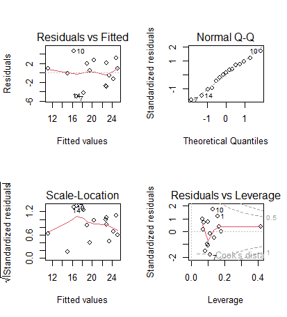
In diesem Fall ist alles OK. Man muss vor allem die oberen beiden Teilabbildungen betrachten. Links oben kann man gut erkennen, wenn Linearität oder Varianzhomogenität verletzt wären, rechts oben dagegen, wenn die Normalverteilung der Residuen verletzt wäre. Zu berücksichtigen ist, dass reale Daten nie perfekt linear, varianzhomogen und normalverteilt sind.
Uns interessieren nur massive Abweichungen. Wir würden sie wie folgt erkennen:
- Linearität: Eine Verletzung erkennen wir in der linken oberen Abbildung, wenn wir eine “Wurst” bzw. “Banane” sehen, also wenn die linken Punkte alle unter der gepunktelten Linie, die mittleren alle darüber und die rechten wieder alle darunter lägen (oder umgekehrt).
- Varianzhomogenität: Eine Verletzung erkennen wir in der linken oberen Abbildung, wenn die Punktwolke einen starken Keil (meist nach rechts offen) beschreibt.
- Normalverteilung der Residuen: Eine Verletzung erkennen wir in der rechten oberen Abbildung, wenn die Punkte sehr stark von der gestrichelten Linie abweichen, insbesondere wenn sie eine ausgeprägte Treppenkurve bilden.
Die beiden unteren Abbildungen sind für die Diagnostik weniger wichtig. Links unten haben wir eine skalierte Version der Abbildung links oben. Die Abbildung rechts unten zeigt uns, ob bestimmte Datenpunkte übermässigen Einfluss auf das Gesamtergebnis haben. Das wären Punkte mit einer Cook’s distance über 0.5 und insbesondere über 1. In solchen Fällen sollten wir noch einmal kritisch prüfen, ob (a) evtl. ein Eingabefehler vorliegt und (b) der bezeichnete Punkt wirklich zur Grundgesamtheit gerechnet werden sollte. Wenn aber beide Aspekte nicht zu beanstanden sind, dann gibt es auch keinen Grund, den entsprechenden Datenpunkt auszuschliessen; wir müssen uns nur bewusst sein, dass er das Gesamtergebniss übermässig stark beeinflusst.
Zum Schluss kommt noch ein Beispiel, bei dem die Modellvoraussetzungen einer linearen Regression klar nicht erfüllt sind.
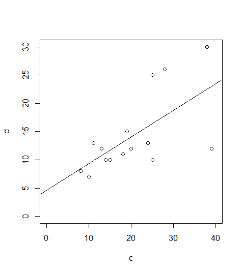

Hier sind die Voraussetzungen klar nicht erfüllt: (a) es liegt starke Varianzinhomogenität vor (links oben als nach rechts offener Keil erkennbar, links unten als klar ansteigende Kurve); (b) die Normalverteilung der Residuen ist auch nicht gegeben (im Q-Q-Plot rechts oben weichen die Punkte stark von der theoretischen Kurve ab und bilden stattdessen eine Treppenkurve). Schliesslich sehen wir rechte unten auch noch, dass es einen extrem einflussreichen Datenpunkt mit Cook’s distance > 1 und einen weiteren mit Cook’s distance > 0.5 gibt.
In diesem Fall schlussfolgern wir, dass das Modell fehlspezifiziert war. Da die Varianz mit dem Mittelwert zunimmt, während zugleich keine Null-Werte unter der abhängigen Variablen auftreten, wäre eine Logarithmus-Transformation der abhängigen Variablen hier vermutlich ein zielführendes Vorgehen. Dieses sollten wir ausprobieren und anschliessend wiederum die Residualplots betrachten.
Zusammenfassung
Weiterführende Literatur
- Crawley, M.J. 2015. Statistics – An introduction using R. 2nd ed. John Wiley & Sons, Chichester, UK: 339 pp.
- Chapter 7 – Regression: pp. 114–139
- Chapter 8 – Analysis of Variance: pp. 150–167
- Fox, J. & Weisberg, S. 2019. An R companion to applied regression. 3rd ed. SAGE Publications, Thousand Oaks, CA, US: 577 pp.
- Logan, M. 2010. Biostatistical design and analysis using R. A practical guide. Wiley-Blackwell, Oxford, UK: 546 pp.
- pp. 151-166 (lineare Modelle)
- pp. 167-207 (Korrelation und einfache lineare Regression)
- pp. 254-282 (Einfaktorielle ANOVA)
- pp. 311-359 (Mehrfaktorielle ANOVA)
- Quinn, G.P. & Keough, M.J. 2002. Experimental design and data analysis for biologists. Cambridge University Press, Cambridge, UK: 537 pp.
- Warton, D.I. & Hui, F.K.C. 2011. The arcsine is asinine: the analysis of proportions in ecology. Ecology 92: 3–10.
- Wilson, J.B. 2007. Priorities in statistics, the sensitive feet of elephants, and don’t transform data. Folia Geobotanica 42: 161–167.